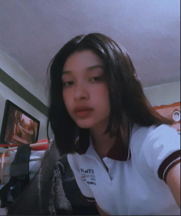

Comenzaremos diciendo que todos nuestros compañeros tienen un lugar especial en nosotros porque al pasar tanto tiempo estudiando juntos se vuelven personas con las que convivimos y disfrutamos diariamente de momentos divertidos, sin embargo, debido a la naturaleza de esta actividad, sólo eswcribitemos una breve opinión algunos pocos compañeros y compañeras del grupo de 4°F Programación.
Es una niña muy buena onda, es divertida y muy extrovertida, es alegre y trabajadora. 
Es una buena amiga se enoja muy facil es muy alegre y hace bonitas presentaciones.
Es muy alegre le gusta hacer amigos se lleva muy bien con todos
Es muy buen compañero trabajador estudioso y siempre esta para ayudarte